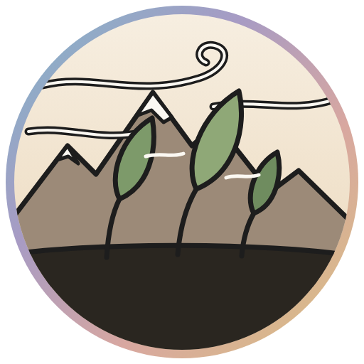

Zonda
Salas, chat, llamadas y pantalla compartida, de dispositivo a dispositivo. Sin servidores, sin cuentas, sin publicidad.
Windows
Descargar para WindowsDescomprimí la carpeta donde quieras y abrí zonda.exe. Si Windows avisa que la app es nueva, tocá «Más información» → «Ejecutar de todas formas».
Android
Descargar para Android Teléfono viejo: versión de 32 bitsAbrí el archivo descargado y permití instalar desde esta fuente cuando el teléfono lo pida. Las actualizaciones se avisan solas dentro de la app.
Versión —